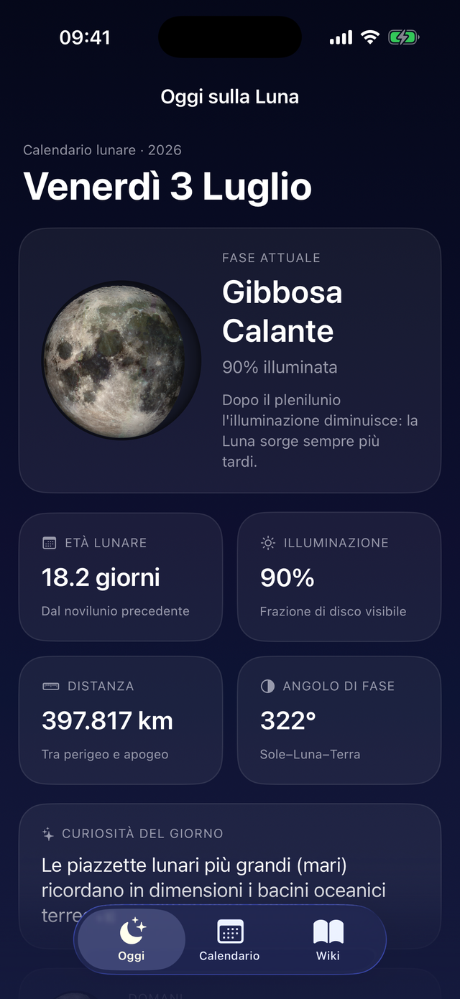
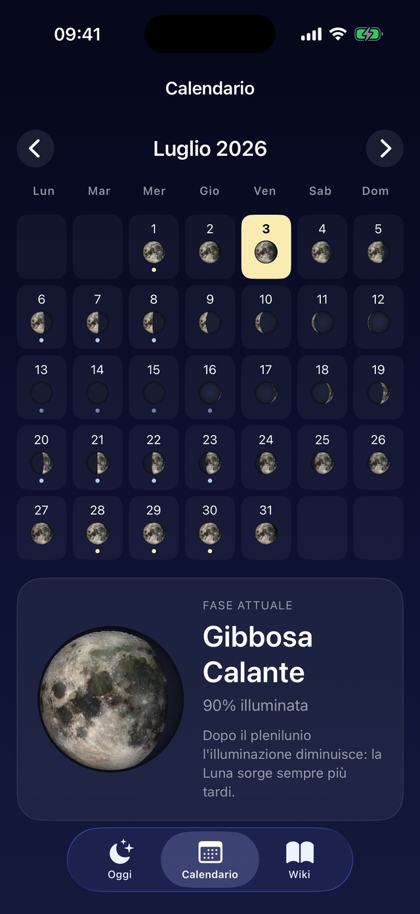
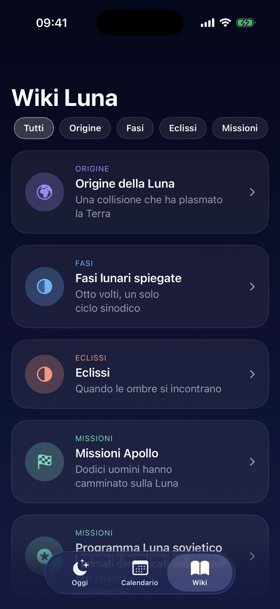

La Luna, spiegata bene
Un osservatorio tascabile disegnato come un cielo notturno.
Oggi sulla Luna
Fase attuale, percentuale di illuminazione, età lunare, distanza Terra–Luna e angolo di fase, calcolati in tempo reale sul tuo dispositivo.
Calendario lunare
Ogni giorno del mese con la sua fase. Noviluni, pleniluni e quarti evidenziati: perfetto per osservazioni e fotografia notturna.
Wiki Luna
Origine della Luna, fasi, eclissi, missioni Apollo, Artemis, Chang’e e Chandrayaan, geologia lunare. Con una curiosità nuova ogni giorno.
Widget
La fase lunare sulla schermata Home e sulla schermata di blocco, sempre aggiornata senza aprire l’app.
Nessun dato raccolto
Poeta Lunare funziona completamente offline: nessun account, nessuna pubblicità, nessun tracciamento. I calcoli astronomici avvengono interamente sul tuo dispositivo.
Supporto
Domande, suggerimenti o problemi? Scrivici, rispondiamo volentieri.